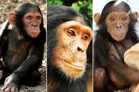

chimpancés
 En la República Democrática del Congo, el Santuario de Chimpancés Lwiro, en el Parque Nacional Kahuzi Biega, es una técnica esencial de conservación para los primates. Actualmente, cuidamos a 92 chimpancés y 108 monos de 13 especies diferentes, todos ellos víctimas del comercio de mascotas o la caza furtiva.
Amenazas
Se estima que el 85% de las especies de monos son cazadas en Indonesia, el 64% en Madagascar, el 51% en la República Democrática del Congo y el 35% en Brasil.